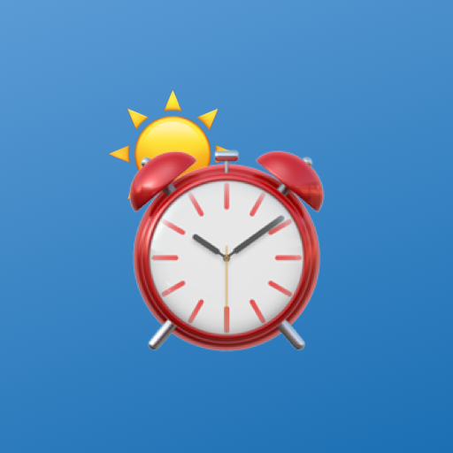

날씨 알람
깨우면서 오늘 날씨를 음성으로 브리핑하는 알람
이게 뭔가요
알람시계인데, 끄는 순간 오늘 날씨를 음성(TTS)과 풀스크린으로 알려줍니다. 아침에 날씨앱을 따로 열지 않아도 옷차림·우산 판단이 끝납니다. 데이터는 기상청 단기/중기예보.
- 설정한 시각에 정확히 울리고, 벨소리 뒤 바로 날씨를 낭독
- 잠금화면 위 풀스크린 — 음성과 같은 내용을 큼직하게
- 어제 대비 온도차·강수·옷차림 한 줄 브리핑
- 오늘 + 주간을 한눈에 보는 홈 위젯
설치 방법
안드로이드에서 APK 를 받아 실행하면 "알 수 없는 출처" 설치 확인이 한 번 뜹니다. 허용하면 설치됩니다. 이후 새 버전은 앱이 알아서 알림으로 띄워 줍니다(앱내 자동 업데이트).
권한: 정확한 알람, 전체 화면 알림, 위치(현재 위치 날씨), 알림. 위치는 날씨 조회에만 씁니다.